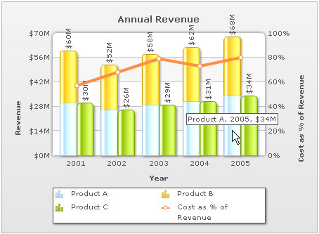

| Creating Multi-series Stacked 2D Line Dual Y Chart | ||||||||||||||||||||||||||||||
|
In this section we will show you how to create a complex chart - multi-series Stacked 2D Line Dual Y Chart. Here we calculate the cost as Percentage of Revenue for three products A, B, and C. |
||||||||||||||||||||||||||||||
| Let's examine the following data for a multi-series Stacked 2D Line Dual Y chart. | ||||||||||||||||||||||||||||||
|
||||||||||||||||||||||||||||||
The chart created using this data looks like the image shown below: |
||||||||||||||||||||||||||||||
|  | ||||||||||||||||||||||||||||||
|
Here we need to create:
|
||||||||||||||||||||||||||||||
Before you go further with this page, we recommend you to please see the previous page, Creating First Chart, as we start off from concepts explained in that page. |
||||||||||||||||||||||||||||||
| Let's go through the code that builds this chart: | ||||||||||||||||||||||||||||||
<?php
# Include FusionCharts PHP Class
include("../Class/FusionCharts_Gen.php");
# Create Multiseries Stacked Column2D Line DY object using FusionCharts PHP Class
$FC = new FusionCharts("MSStackedColumn2DLineDY","450","350");
# Set the relative path of the SWF file
$FC->setSWFPath("../FusionCharts/");
# Define chart attributes
$strParam="caption=Annual Revenue;rotateValues=1;xAxisName=Year;
PYAxisName=Revenue;SYAXisName=Cost as %25 of Revenue;numberPrefix=$;
numberSuffix=M;sNumberSuffix=%25;SYAxisMinValue=0;SYAxisMaxValue=100;
showValues=0;useroundedges=1;showSum=1";
# Set chart attributes
$FC->setChartParams($strParam);
# Add category names
$FC->addCategory("2001");
$FC->addCategory("2002");
$FC->addCategory("2003");
$FC->addCategory("2004");
$FC->addCategory("2005");
# Add Multi-series Dataset
$FC->createMSStDataset();
# Add Multi-series dataset with in dataset
$FC->addMSStSubDataset("Product A", "");
# Add set data for plotting the chart
$FC->addChartData("30");
$FC->addChartData("26");
$FC->addChartData("29");
$FC->addChartData("31");
$FC->addChartData("34");
# Add Multi-series dataset with in dataset
$FC->addMSStSubDataset("Product B", "");
# Add set data for plotting the chart
$FC->addChartData("30");
$FC->addChartData("26");
$FC->addChartData("29");
$FC->addChartData("31");
$FC->addChartData("34");
# Add Multi-series Dataset
$FC->createMSStDataset();
# Add Multi-series dataset with in dataset
$FC->addMSStSubDataset("Product C", "");
# Add set data for plotting the chart
$FC->addChartData("30");
$FC->addChartData("26");
$FC->addChartData("29");
$FC->addChartData("31");
$FC->addChartData("34");
# Add Multi-series lineset for showing lines
$FC->addMSLineset("Cost as %25 of Revenue","lineThickness=4");
# Add set data with in lineset
$FC->addMSLinesetData("57");
$FC->addMSLinesetData("68");
$FC->addMSLinesetData("79");
$FC->addMSLinesetData("73");
$FC->addMSLinesetData("80");
?>
<html>
<head>
<title>Multiseries Stacked Column2D Line DY Chart Using FusionCharts PHP Class</title>
<script language='javascript' src='../FusionCharts/FusionCharts.js'></script>
</head>
<body>
<?php
# Render Chart
$FC->renderChart();
?>
</body>
</html> |
||||||||||||||||||||||||||||||
As you can see in the above code, we are doing the following:
|
||||||||||||||||||||||||||||||
Please go through the FusionCharts PHP Class API Reference section to know more about the functions used in the above code. And the Multi-series Stacked 2D Line Dual Y chart is ready! |
||||||||||||||||||||||||||||||